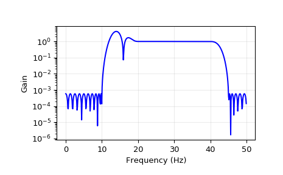

scipy.signal.remez¶
-
scipy.signal.remez(numtaps, bands, desired, weight=None, Hz=None, type='bandpass', maxiter=25, grid_density=16, fs=None)[source]¶ Calculate the minimax optimal filter using the Remez exchange algorithm.
Calculate the filter-coefficients for the finite impulse response (FIR) filter whose transfer function minimizes the maximum error between the desired gain and the realized gain in the specified frequency bands using the Remez exchange algorithm.
Parameters: numtaps : int
The desired number of taps in the filter. The number of taps is the number of terms in the filter, or the filter order plus one.
bands : array_like
A monotonic sequence containing the band edges. All elements must be non-negative and less than half the sampling frequency as given by fs.
desired : array_like
A sequence half the size of bands containing the desired gain in each of the specified bands.
weight : array_like, optional
A relative weighting to give to each band region. The length of weight has to be half the length of bands.
Hz : scalar, optional
Deprecated. Use `fs` instead. The sampling frequency in Hz. Default is 1.
type : {‘bandpass’, ‘differentiator’, ‘hilbert’}, optional
The type of filter:
- ‘bandpass’ : flat response in bands. This is the default.
- ‘differentiator’ : frequency proportional response in bands.
- ‘hilbert’ : filter with odd symmetry, that is, type III
- (for even order) or type IV (for odd order) linear phase filters.
maxiter : int, optional
Maximum number of iterations of the algorithm. Default is 25.
grid_density : int, optional
Grid density. The dense grid used in
remezis of size(numtaps + 1) * grid_density. Default is 16.fs : float, optional
The sampling frequency of the signal. Default is 1.
Returns: out : ndarray
A rank-1 array containing the coefficients of the optimal (in a minimax sense) filter.
See also
References
[R293] J. H. McClellan and T. W. Parks, “A unified approach to the design of optimum FIR linear phase digital filters”, IEEE Trans. Circuit Theory, vol. CT-20, pp. 697-701, 1973. [R294] J. H. McClellan, T. W. Parks and L. R. Rabiner, “A Computer Program for Designing Optimum FIR Linear Phase Digital Filters”, IEEE Trans. Audio Electroacoust., vol. AU-21, pp. 506-525, 1973. Examples
For a signal sampled at 100 Hz, we want to construct a filter with a passband at 20-40 Hz, and stop bands at 0-10 Hz and 45-50 Hz. Note that this means that the behavior in the frequency ranges between those bands is unspecified and may overshoot.
>>> from scipy import signal >>> fs = 100 >>> bpass = signal.remez(72, [0, 10, 20, 40, 45, 50], [0, 1, 0], fs=fs) >>> freq, response = signal.freqz(bpass)
>>> import matplotlib.pyplot as plt >>> plt.semilogy(0.5*fs*freq/np.pi, np.abs(response), 'b-') >>> plt.grid(alpha=0.25) >>> plt.xlabel('Frequency (Hz)') >>> plt.ylabel('Gain') >>> plt.show()
